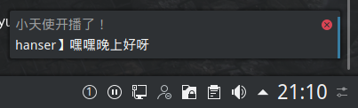

不想开斗鱼APP推送，如何在pc端收到hanser直播的通知呢？本人是linux的深度使用者，这就需要写一个守护进程在后台监测了。
简介
平时常用的mysql，httpd，nginx都是守护进程（daemon），可以被systemctl命令管理，例如sudo systemctl start XXX可以启动一个守护进程，sudo systemctl stop XXX则是关闭。
本人环境Archlinux，arch已经从service迁移到了systemd，关于systemd资料如下
编写脚本
首先需要写一个脚本，监听直播间的状态，因为刚刚学ruby，这里我选择ruby。
第一步就是找到包含直播间的状态api，但是网上关于斗鱼的api的介绍实在是太少了，我也没能分析出上百条xhr里哪个包含直播间状态，但是我发现斗鱼的友邻是可以看到在线状态的！于是迫不得已下只能用这个“骚”操作。
这里用王菠萝的直播间做测试，房间号52004,这里的对应的api是https://www.douyu.com/japi/anchorfriend/api/getAnchorFriends?rid=52004，可以拿到友邻列表，其中hanser的数据如下：{
"hot":0,
"icon":"https://apic.douyucdn.cn/upload/avanew/face/201707/13/12/060902aa06187ba0d0017fe6a25f8337_middle.jpg",
"isLive":0,
"isMutual":0,
"nickname":"hanserLIVE",
"rid":2550505,
"roomTitle":"hanser】礼拜一！",
"roomType":0,
"visit":0
}
可以看出,isLive就是在线状态，所以只要让脚本监听这个字段就行了。
Ruby代码：
# -*- coding: UTF-8 -*-
require 'net/https'
require 'uri'
require 'json'
require 'gir_ffi'
=begin
斗鱼api的资料太少了，只能用友邻看状态这个骚操作来替代一下啦
=end
GirFFI.setup :Notify
Notify.init("小天使开播了！")
#默认当前不在直播
curStatus = false
puts 'starting...'
while true do
uri = URI.parse('https://www.douyu.com/japi/anchorfriend/api/getAnchorFriends?rid=52004')
res = Net::HTTP.post_form(uri,{})
resbody = JSON.parse(res.body)
list = resbody["data"]["list"]
hanser = list.filter{|zb|zb["rid"]==2550505}[0]
isLive = hanser["isLive"]==1
roomTitle = hanser["roomTitle"]
puts 'hanser is live' if isLive
puts 'hanser is not live' if !isLive
if isLive!=curStatus then
if isLive then
message = Notify::Notification.new("小天使开播了！", hanser["roomTitle"], "dialog-information")
message.show
curStatus = !curStatus
else
message = Notify::Notification.new("小天使关播了", hanser["roomTitle"], "dialog-information")
message.show
curStatus = !curStatus
end
end
sleep(10)
end
这里用到了gir_ffi库，用来操作KDE的通知推送，要先安装gem install gir_ffi。每隔10s就请求一次，默认为非直播状态，检测到直播后/关播改变当前状态，防止不断的发送通知。
ruby文件存为main.rb，编写启动脚本wait-for-hanser.sh,我们最后把文件放到/usr/share/hanser下，所以脚本如下：
/etc/X11/xinit/xinitrc.d/50-systemd-user.sh
ruby -w /usr/share/hanser/main.rb
其中/etc/X11/xinit/xinitrc.d/50-systemd-user.sh据说是archwiki上说用来设置X11环境的，我用了并没有什么用，但还是加上了。
编写systemd服务
接下来就是让该脚本作为一个守护进程持续运行了。
创建hanser.service文件：[Unit]
Description=Hanser
After=network.target
PartOf=graphical-session.target
[Service]
User=xuranus
ExecStart=/usr/share/hanser/wait-for-hanser.sh
Environment="DISPLAY=:0"
#Environment="XAUTHORITY=/tmp/xauth-1000-_0"
Environment="DBUS_SESSION_BUS_ADDRESS=unix:path=/run/user/1000/bus"
Restart=alwaysDescription填写服务介绍，因为该服务需要network.service，所以写在After后面。ExecStart写启动脚本，因为我在root不知道为何找不到gem环境，于是用我的用户xuranus运行，由于该进程要在X11环境先运行，所以要设置$DISPLAY和$DBUS_SESSION_BUS_ADDRESS环境变量。Restart设置为always因为脚本的脆弱性，容易崩，崩后可以迅速重启
安装和卸载
INSTALL:
#echo 'install ruby'
#sudo pacman -S ruby
#echo 'install gir_ffi'
#sudo gem install gir_ffi
echo 'make directory /usr/share/hanser'
sudo mkdir /usr/share/hanser
echo 'create /usr/lib/systemed/system/hanser.service'
sudo cp hanser.service /usr/lib/systemd/system
echo 'create /usr/share/hanser/wait-for-hanser.sh'
sudo cp wait-for-hanser.sh /usr/share/hanser/wait-for-hanser.sh
echo 'create /usr/share/hanser/main.rb'
sudo cp main.rb /usr/share/hanser/main.rb
sudo chmod +x /usr/share/hanser/main.rb
sudo chmod +x /usr/share/hanser/wait-for-hanser.sh
sudo systemctl daemon-reload
echo 'Done.'
UNINSTALL:
echo 'uninstalling...'
sudo rm -rf /usr/share/hanser
echo 'stoping...'
sudo systemctl stop hanser
echo 'disabling....'
sudo systemctl disable hanser
echo 'removing service...'
sudo rm -rf /usr/lib/systemd/system/hanser.service
echo 'Done.'
只需要执行sudo ./INSTALL
sudo systemctl start hansersudo systemctl status hanser 可以看到服务已经成功跑起来了● hanser.service - Hanser
Loaded: loaded (/usr/lib/systemd/system/hanser.service; disabled; vendor preset: disabled)
Active: active (running) since Wed 2019-06-26 11:37:47 CST; 4h 25min ago
Main PID: 27735 (wait-for-hanser)
Tasks: 4 (limit: 4915)
Memory: 20.8M
CGroup: /system.slice/hanser.service
├─27735 /bin/sh /usr/share/hanser/wait-for-hanser.sh
└─27750 ruby -w /usr/share/hanser/main.rb
Jun 26 14:08:11 Thanos wait-for-hanser.sh[27735]: hanser is not live
设置成开机启动：sudo systemctl enable hanserCreated symlink /etc/systemd/system/multi-user.target.wants/hanser.service → /usr/lib/systemd/system/hanser.service.
Created symlink /etc/systemd/system/xsession.target.wants/hanser.service → /usr/lib/systemd/system/hanser.service.
到9点了，看看效果

再也不用担心错过小天使的直播辣！